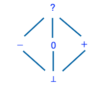

Program Abstractions
Any non-trivial semantic property that we may wish to check about programs is undecidable. Examples of such properties include whether an assertion may fail on some input, whether the program will terminate on all inputs, and many others. Thus, it is clear that any program analysis must work with approximations of programs, called abstractions.
Designing a suitable program abstraction is a delicate balance of tradeoffs. By abstracting a program, we lose some concrete information. A good choice of abstract domain depends on the analysis designer’s use cases but, in general, should be abstract enough to allow for efficient analysis and precise enough to check a desired property in programs of interest. In this article, we will explore a series of numerical abstract domains, each increasing in precision. These domains can be used to statically check for programming errors involving integers, such as divide-by-zero and array index out-of-bounds errors. The principles in this article are also applicable to designing abstract domains for program data types besides integers, such as pointers, reals, and arrays.
Abstract Domain 1: The Sign Domain
We begin with a simple abstract domain: the sign domain. It consists of five abstract values:- Zero (0), representing the integer value 0;
- Minus (-), representing any negative integer value;
- Plus (+), representing any positive integer value;
- Top (?), representing any integer value; and
- Bottom (⊥), representing no integer value.
In contrast, the concrete domain contains all possible integer values – in fact, infinitely many.
The reader may wonder why we assume infinitely many integers in the concrete domain; after all, programming languages typically limit the size of an integer value. For instance, in Java, the int type is 4 bytes in size, allowing integer values from -231 to 231-1, or -2,147,483,648 to 2,147,483,647. Our assumption is motivated by the desire to analyze programs at a more general and fundamental level, rather than in a particular programming language or on a particular computer machine. Note that, even if we were to target a specific language or machine, we might want abstraction for efficiency reasons.
Elements in the abstract domain are partially ordered and depicted using a Hasse diagram, shown below for the sign domain.
An edge from a lower element X to a higher element Y in the diagram indicates that X is at least as precise as Y. For instance, an edge from ‘+’ to ‘?’ indicates that ‘+’ is a more precise abstract value than ‘?’ for any positive integer (such as 42). A partial order is by definition transitive (e.g., ‘⊥’ is more precise than ‘?’) and anti-symmetric (two different elements cannot be more precise than each other). Lastly, the order is partial as opposed to total; for instance, there is no edge from ‘+’ to ‘-’, indicating that abstract values ‘+’ and ‘-’ are incomparable (i.e., neither is more precise than the other).
Although the sign domain has only a few states, it suffices for some straightforward use cases. For example, consider the following program. The comments in blue represent the abstract value of integer variable x at the current program point. The red comments represent specific points in the program.
// x: ? if (x == 0) { // p1 // x: 0 x++; // p2 // x: + } else if (x > 0) { // p3 // x: + x = x * 20; // p4 // x: + } else if (x < 0) { // p5 // x: - x = x * (-10); // p6 // x: + } // x: + assert(x > 0);
At the start of the program, the analysis initializes the *abstract value* of x to ‘?’ since x is uninitialized and could take any integer value. Next, we interpret the conditional at program point p1 to determine that the abstract value of x should be ‘0’. At p2 we reach the addition operation. How should we apply addition to an abstract value? In general, we must define the semantics of each operation in the programming language or intermediate language (such as the LLVM IR) on abstract values. This is called the abstract semantics, in contrast to the language’s *concrete semantics* that is typically defined in its reference manual.
The abstract semantics of the addition operation can be defined as expected: adding two negative values results in a negative number, but adding a negative value to a positive value can be positive or negative. So, we must represent it as ‘?’. The rest of the abstract semantics for addition is shown in the following table:

So, at program point p2 the abstract value of x becomes ‘+’. Similarly, at program point p3 we interpret the conditional and determine that the abstract value of x should be ‘+’. Now, we reach program point p4 that involves multiplication. Likewise, we must define the abstract semantics of the multiply operation:

So, at program point p4 we set the abstract value of x to be ‘+’, the result of multiplying two positive values. The last conditional follows similarly. Once we reach the assertion, we must merge the abstract values of x from each path. The merge operator in this domain is a conjunction. This means that for the abstract value to be ‘+’, the abstract values along all incoming paths must also be ‘+’. If there is any disagreement, we default to ‘?’. Here, the abstract value of x is ‘+’ along all paths, which in turn allows our static analysis to prove the assertion (x > 0) at the end of the program.
It is clear that a merge may cause us to lose some information. For example, consider the following program:
// x: ? if (x == 0) { // p1 // x: 0 x++; // p2 // x: + } else if (x > 0) { // p3 // x: + x = x * (-10); // p4 // x: - } // x: ? assert(x != 0);
Like the previous example, the abstract value of x starts as ‘?’ and is set by interpreting conditionals and applying the abstract addition and multiplication operators. However, in this example, when the two program paths merge we have differing abstract values for x. We know that in one program path, the value of x is positive, and in the other program path, the value of x is negative. Thus, it is clear that the value is nonzero. Unfortunately, our abstract domain does not have an abstract value to represent that “the value could be + or -, but not 0”. Thus, when we merge, the abstract value of x is ‘?’. Although it is clear that the value of x will never be 0 when we reach the assertion, the analysis cannot prove that fact using this abstract domain. This provides some motivation for a more precise abstract domain.
Abstract Domain 2: Simple Powerset Sign Domain
In addition to zero, minus, and plus, we introduce abstract values for >= 0 and <= 0. So, we have:
- Zero (0), representing the integer value 0;
- Minus (-), representing any negative integer value;
- Plus (+), representing any positive integer value;
- Non-Positive (-, 0), representing any non-positive integer value;
- Non-Negative (0, +), representing any non-negative integer value;
- Top (?), representing any integer value; and
- Bottom (⊥), representing no integer value.
Let us consider the following example to demonstrate the increase in precision from our previous abstract domain:
// x: ? if (x == 0) { // p1 // x: 0 x--; // p2 // x: - } else if (x < 0) { // p3 // x: - x = x + (-5); // p4 // x: - } else if (x > 0) { // p5 // x: + x = x * 0; // p6 // x: 0 } // x: -,0 assert(x <= 0);
As usual, the abstract value of x begins as unknown and is set by interpreting conditionals and applying abstract operators. In this example, we introduce the abstract subtraction operator which can be defined as follows:

Since subtraction is not commutative, we designate each row as the left binary operand and each column as the right binary operand. The size of this matrix makes it clear that as our abstract domain becomes more precise, our computations become more complicated.
At program point p2, we subtract a positive value from 0, giving us the abstract value ‘-’. The rest of the abstract assignments follow as expected. When the analysis reaches the assertion, we again must merge the abstract values. Here, our values to merge are ‘-’, ‘-’, and ‘0’. Luckily, we can represent this in our abstract domain with the value ‘-, 0’. Thus, our analysis is able to prove the assertion (x <= 0).
It is clear that this abstract domain is more precise than our original example, but we still cannot represent a “nonzero” abstract value. Consider this simple example:
// x: ? while (x != 0) { // x: ? }
Although it is quite clear to the reader that x will never be equal to zero at the assertion, we cannot represent this in our abstract domain, causing our analysis to raise a false alarm.
Abstract Domain 3: Enhanced Powerset Sign Domain
We introduce an even more precise domain by adding the abstract value ‘-, +’. So, we have:

- Zero (0), representing the integer value 0;
- Minus (-), representing any negative integer value;
- Plus (+), representing any positive integer value;
- Non-Positive (-, 0), representing any non-positive integer value;
- Non-Zero (-, +), representing any nonzero integer value;
- Non-Negative (0, +), representing any non-negative integer value;
- Top (?), representing any integer value; and
- Bottom (⊥), representing no integer value.
This domain can help us with our simple example above! After interpreting the conditional at p1 , we can represent the abstract value by ‘-, +’ and thereby enable the analysis to prove the assertion:
// x: ? while (x != 0) { // x: -,+ }
This increase in precision, however, comes at an expense. As a domain becomes more precise, the abstract operators become more difficult to compute and the abstract states become more difficult to store. In large real-world programs, this can become problematic. Let us consider another abstract domain that greatly increases precision.
Abstract Domain 4: Interval Domain

In this domain, abstract values represent intervals and are of the form: [a1, a2]. If the abstract value for a variable x is [a1, a2] at program point P, then a1 <= x <= a2 holds true at P.
This domain is notably different from the other abstract domains we have covered. Its height is not finite! It is possible to construct a sound abstraction with an infinite lattice, but the analysis designer must employ “widening” to ensure convergence.
The interval domain can be used to prove assertions about variables at the granularity of specific values. The following segment of code demonstrates a use case for static analysis with the interval domain.
x, y = 0, 0;
while (x != 100) {
x, y = x++, y++;
}
assert(x == 100);
assert(y == 100);
Abstract Domain 5: Difference-Bound Matricies
An abstract domain even more expressive than the interval domain is the DBM domain. This domain is based on Difference-Bound Matrices and is a relational domain: it finds relationships between variables. More specifically, it finds relations between pairs of variables. Using this domain, a static analysis can discover invariants of the forms x - y <= c or +/- x <= c, where and x and y are program variables and c is an integer or real constant. In contrast, the interval domain can only handle invariants of the form +/- x <= c. Invariants of the form x - y <= c are particularly useful for cases where there are unbounded loops.
Consider for instance the following program:
x = 0; y = -3; while (y <= 0) { if (random()) { x = x + 1; } y = y + 1; } assert(x - y <= 3);
Using interval domain, the final intervals that we obtain are 0 <= x <= 4 and -3 <= y <= 0. Graphically:

To verify the assertion in this program, however, we need to establish the relational loop invariant x - y <= 3. (Recall that a loop invariant is a condition that holds before and after each loop iteration.) We can achieve this using the DBM domain. It constructs a matrix called the Difference-Bound Matrix showing the relation between every pair of program variables. This matrix has a single row/column for each program variable. For the above program, which contains only two variables x and y, the matrix is as follows:

We interpret such a matrix as defining relations of the form vj - vi <= mij. Thus, the relations defined by the above matrix are as follows:
- x - y <= 3
- x <= 4
- -x <= 0
- -y <= 3
- y <= 1

The ASTRÉE Analyzer and the Octagon Abstract Domain
Abstraction is a powerful technique to allow efficient analysis. However, program analysis is undecidable. It is not possible to create an analysis for a Turing-complete language that is sound, complete, and guarantees termination.
Patrick and Radhia Cusot, originators of Abstract Interpretation, began developing the ASTRÉE static analyzer in 2001 with the goal of creating a static analysis that is sound, complete, and guaranteed to terminate. ASTRÉE can be applied to large C programs without any false alarms under certain conditions, described below.
What is ASTRÉE?
ASTRÉE is designed to prove the absence of runtime errors such as divide-by-zero, array index out-of-bounds, integer overflow, and assertion failures. As we know, proving such properties about programs is undecidable. ASTRÉE limits users to a subset of the C language to ensure completeness and termination. This subset excludes union types, dynamic memory allocation, unbounded recursive function calls, backward branching, conflicting side effects and the use of C libraries. However, this cost comes with the great reward of runtime-safe C programs. In safety critical systems, ASTRÉE is particularly appealing. The airline manufacturer Airbus uses ASTRÉE to ensure runtime safety of C programs.
ASTRÉE began as a simple memory model in conjunction with an interval abstraction. The memory model contained abstract states to represent single or multiple concrete memory locations. On the other hand, the interval abstraction domain represented the numeric ranges a variable could hold. As the project progressed, the developers designed and combined many other abstractions to create a multi-abstraction analysis with an acceptable ratio between efficiency and precision.
A particularly interesting abstract domain that ASTRÉE employs is the octagon domain. It is another relational domain that finds relationships between variables. It is able to represent conjunctions in the form +/- x +/- y <= c where x and y are program variables and c is a constant. Consider the following example:
x = 10; y = 0; while (x >= 0) { x = x - 1; if random() { y = y + 1; } } assert(y <= 11);
In order to prove the assertion y <= 11, it is first necessary to prove the relational loop invariant y + x <= 10. Combined with the loop exit condition, x == -1, we can now prove that y <= 11. An example octagon domain is shown below.

In conclusion, increasingly powerful abstract domains can prove increasingly complex assertions but come at a higher cost. By balancing these tradeoffs, the designer can create a sound, precise, and efficient analysis tailored to their use cases.
Numerical Abstract Domains in the IKOS Analyzer
IKOS is an open-source static analyzer by NASA. It targets C/C++ programs based on LLVM IR and uses the theory of Abstract Interpretation to prove the absence of runtime errors. It provides a rich variety of numerical abstract domains, including the interval, DBM, and octagon domains discussed in this article.Acknowledgements
Contributions on Difference-Bound Matricies by Aaditya Naik
Some of the examples in this article are based on material from Ahmed Rezine’s lecture on static analysis.